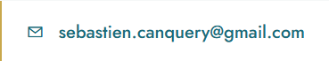

Un accompagnement structuré et humain — du premier échange jusqu'au suivi dans la durée, à chaque étape de votre vie.
Ma démarche repose sur une méthodologie claire qui place votre réalité au centre de chaque décision patrimoniale.
Étape 01
Tout commence par un échange libre, sans frais et sans engagement. Je prends le temps de cerner votre situation personnelle, professionnelle et familiale, vos ambitions et vos préoccupations du moment.
Étape 02
J'établis un état des lieux complet de votre patrimoine : actifs, dettes, revenus, charges et fiscalité. Ce diagnostic approfondi est le socle indispensable à toute stratégie solide et durable.
Étape 03
À partir du bilan, je vous présente une ou plusieurs stratégies patrimoniales cohérentes avec vos objectifs. Chaque solution est expliquée avec clarté, avantages comme points de vigilance inclus.
Étape 04
La mise en place n'est pas une fin en soi. Je reste à vos côtés pour ajuster votre stratégie au fil du temps, en phase avec les évolutions de votre vie et du cadre réglementaire.
Mes recommandations sont dictées uniquement par votre intérêt — aucun conflit, aucune pression commerciale.
Vos données patrimoniales et personnelles sont strictement protégées et ne sont jamais partagées sans votre accord explicite.
Je vous expose toujours les avantages ET les risques de chaque solution. La clarté est une condition de la confiance.
Contactez-moi par email.
Premier échange toujours gratuit et confidentiel.
